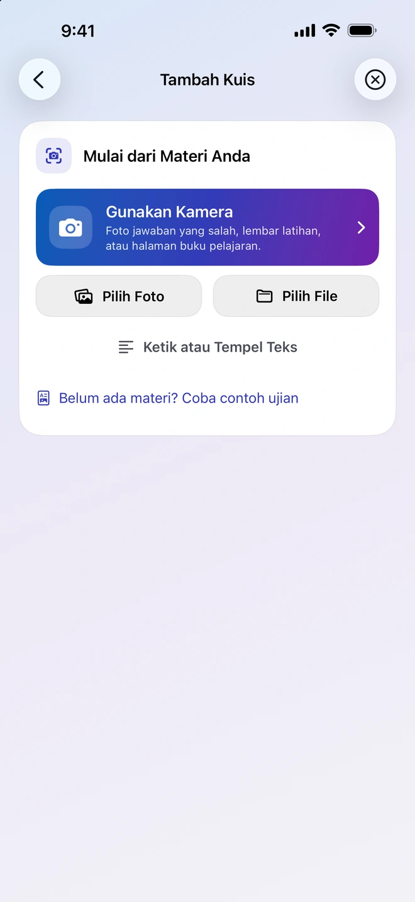
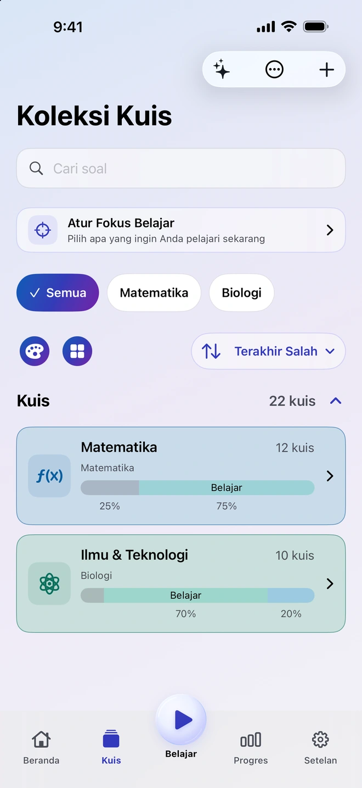
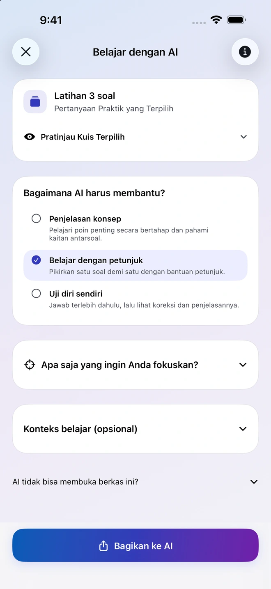
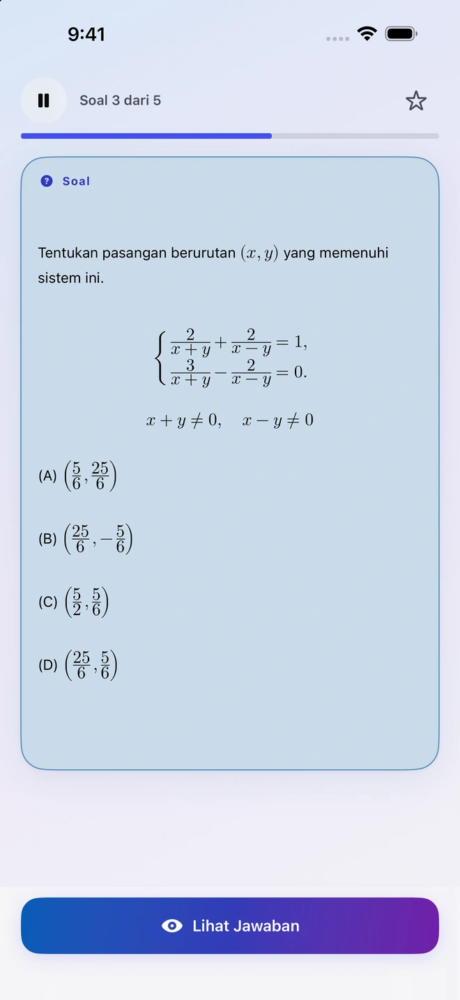
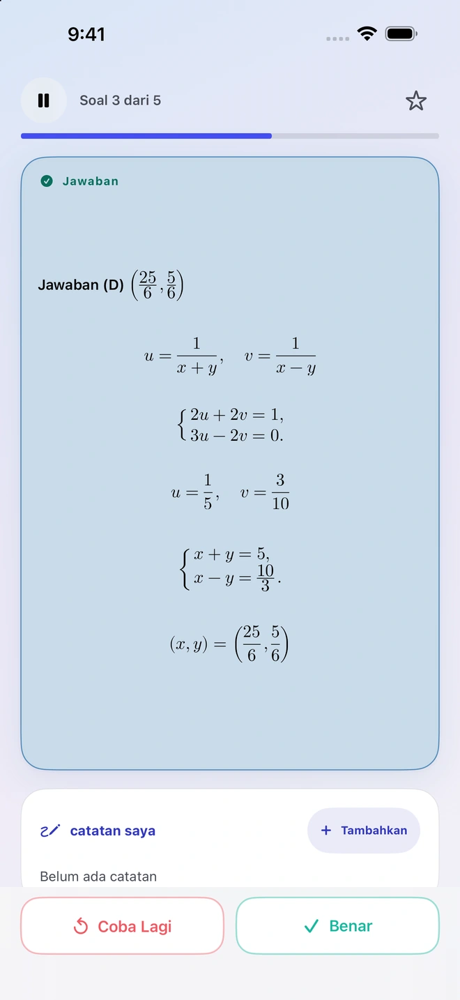
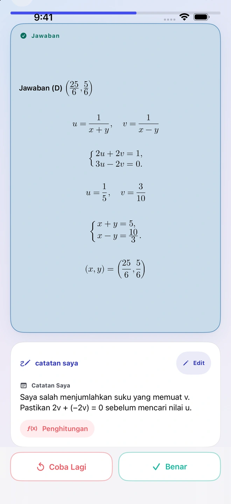
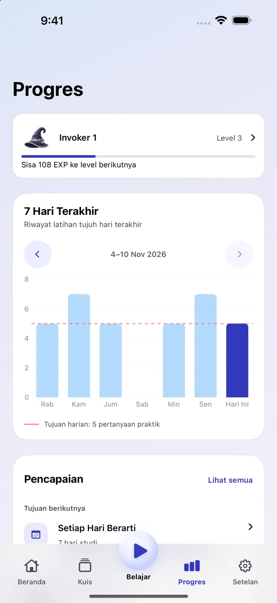

Buat soal dari bahan Anda
Tambahkan foto, PDF, dokumen, atau catatan. Quiz Invoker menyiapkan bahan dan instruksi untuk aplikasi AI eksternal yang kompatibel. Periksa dan impor hasilnya untuk menambahkannya ke koleksi Anda.
Aplikasi belajar untuk iPhone
Mulai dari halaman buku, catatan, atau soal yang pernah salah Anda jawab. Masukkan bahannya ke Quiz Invoker, periksa soal yang dihasilkan, lalu simpan soal yang ingin Anda latih.
Lihat cara kerjanya

Kumpulkan soal yang penting bagi Anda dan pelajari kembali kapan saja.
Tambahkan foto, PDF, dokumen, atau catatan. Quiz Invoker menyiapkan bahan dan instruksi untuk aplikasi AI eksternal yang kompatibel. Periksa dan impor hasilnya untuk menambahkannya ke koleksi Anda.
Bagikan soal pilihan ke aplikasi AI eksternal yang Anda pilih. Minta penjelasan, petunjuk bertahap, atau pertanyaan untuk menguji pemahaman. Anda menentukan berkas atau catatan yang dibagikan.

Kerjakan soal sebelum membuka jawaban dan menilai sendiri hasilnya. Catat bagian yang membuat Anda buntu agar bisa ditinjau lagi saat berlatih.


Lihat latihan terbaru dan bandingkan dengan target harian Anda. Buka kembali catatan untuk mengingat cara Anda mengerjakan soal.


Atur koleksi dan berlatih secara offline tanpa akun Quiz Invoker. Quiz Invoker menyiapkan berkas di perangkat Anda. Aplikasi AI eksternal pilihan Anda menangani bahan yang Anda bagikan.